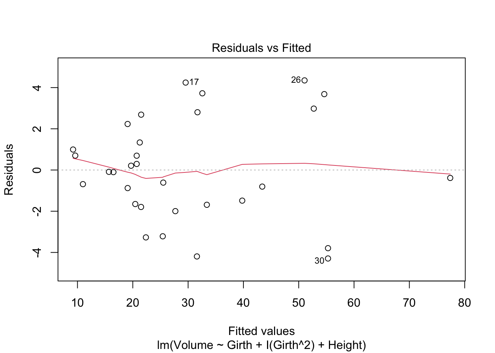

library(smss)
library(alr4)
library(magrittr)Homework 5
hw5
Solutions to the fifth homework
Please check your answers against the solutions.
Load the necessary packages:
Question 1
data("house.selling.price.2")
# object name too long, rename
house <- house.selling.price.2
rm(house.selling.price.2)
# also rename the variables to make them more intuitive
names(house) <- c('Price', 'Size', 'Beds', 'Baths', 'New')A
The variable \(\textrm{Beds}\) would be deleted first in backward elimination, because its p-value 0.487 is the largest of all the variables.
B
# Write a function that, for any given variable name, regresses that variable on Price (P) and gives the p-value:
get_p_value <- function(variable) {
variable %>%
paste0("Price ~ ", .) %>%
as.formula() %>%
lm(data = house) %>%
summary() %>%
use_series('coefficients') %>%
extract(variable,'Pr(>|t|)') %>%
return()
}
# apply the function to all potential explanatory variables
sapply(names(house)[-1], get_p_value) Size Beds Baths New
2.346660e-34 4.758795e-10 9.839165e-16 4.514570e-04 Size has the lowest p-value when regressed against Price, so it should be the first variable to be added in forward selection.
The correlation matrix given in the question gives us the same information: out of all the candidates, Size has the highest correlation with Price: 0.899. Because all pair-wise correlations calculated in the correlation matrix are for samples of same size, the one with highest magnitude will also have the smallest p-value.
C
Once other variables are controlled for, most of the explanation done by Beds is instead done by other variables. For example, houses with more beds are also larger in size. When Beds is the only explanatory variable, the model attributes the effect of the Size variable to Beds. However, once Size is also in the model and thus controlled for, the p-value of Beds gets larger as it doesn’t really have much explanatory power when it comes to variation in Price that remains unexplained after accounting for Size.
D
The question seems to suggest we should compare all possible models, which is possible but probably not a very good idea. When we do backward elimination, we get the model that only excludes ‘Beds.’ So, let’s compare the model that has Beds to the one that doesn’t instead of comparing everything.
fit_full <- lm(Price ~ ., data = house)
fit_nobeds <- lm(Price ~ . -Beds, data = house)Now, let’s write functions to gather each metric that we want to use:
rsq <- function(fit) summary(fit)$r.squared
adj_rsq <- function(fit) summary(fit)$adj.r.squared
PRESS <- function(fit) {
pr <- residuals(fit)/(1 - lm.influence(fit)$hat)
sum(pr^2)
}
# the functions for AIC and BIC are already AIC() and BIC()Apply the two functions to the two objects:
models <- list(fit_full, fit_nobeds)
data.frame(models = c('fit_full', 'fit_nobeds'),
rsq = sapply(models, rsq),
adj.rsq = sapply(models, adj_rsq),
PRESS = sapply(models, PRESS),
AIC = sapply(models, AIC),
BIC = sapply(models, BIC)
) %>%
print() models rsq adj.rsq PRESS AIC BIC
1 fit_full 0.8688630 0.8629022 28390.22 790.6225 805.8181
2 fit_nobeds 0.8681361 0.8636912 27860.05 789.1366 801.7996Note that, for R-squares and Adjusted R-squared, larger is “better” while for PRESS, AIC, and BIC, lower is “better.” However, because R-squared always increases with the addition of new variables, it’s not very important for our purposes here. With other metrics, the model without Beds is the better model since it has higher adjusted R-squared, lower PRESS, AIC, and BIC.
E
Thus I select the model without the Beds variable.
Question 2
data(trees)A
tree_model <- lm(Volume ~ Girth + Height, data = trees)
summary(tree_model)
Call:
lm(formula = Volume ~ Girth + Height, data = trees)
Residuals:
Min 1Q Median 3Q Max
-6.4065 -2.6493 -0.2876 2.2003 8.4847
Coefficients:
Estimate Std. Error t value Pr(>|t|)
(Intercept) -57.9877 8.6382 -6.713 2.75e-07 ***
Girth 4.7082 0.2643 17.816 < 2e-16 ***
Height 0.3393 0.1302 2.607 0.0145 *
---
Signif. codes: 0 '***' 0.001 '**' 0.01 '*' 0.05 '.' 0.1 ' ' 1
Residual standard error: 3.882 on 28 degrees of freedom
Multiple R-squared: 0.948, Adjusted R-squared: 0.9442
F-statistic: 255 on 2 and 28 DF, p-value: < 2.2e-16B
par(mfrow = c(2,3))
plot(tree_model, which = 1:6)
The most obvious violation, based on the first plot, is the violation of the linearity assumption. The red line in the fitted values vs residuals plot should be somewhat straight, but it is actually U-shaped. The main reason for this is that volume is related to \(\textrm{diameter}^2\), but we use the diameter itself in the model (Girth). Let’s see if using a quadratic term fixes the issue.
tree_model_quad <- lm(Volume ~ Girth + I(Girth^2) + Height, data = trees)
plot(tree_model_quad, which = 1)
The line is much more straight now.
Question 3
A
data("florida")
florida_model <- lm(Buchanan ~ Bush, data = florida)
par(mfrow = c(2,3))
plot(florida_model, which = 1:6)
In this model, Palm Beach County is a massive outlier.
B
If we fit a model where each variable is logged, Palm Beach County would be somewhat less of an outlier but would still stand out. Let’s see:
data("florida")
florida_model_logged <- lm(log(Buchanan) ~ log(Bush), data = florida)
par(mfrow = c(2,3))
plot(florida_model_logged, which = 1:6)